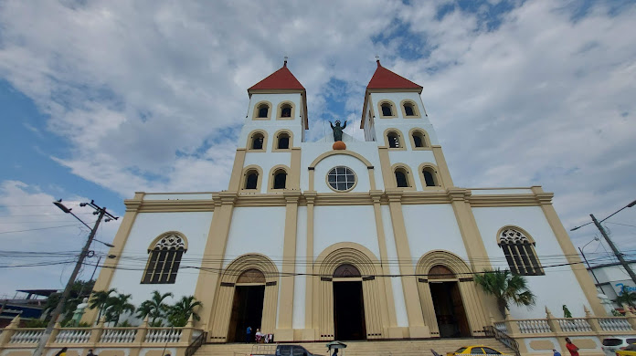

Departamento de San Miguel

Datos históricos importantes
San Miguel fue fundada el 8 de mayo de 1530 por el Capitán Luis de Moscoso bajo el nombre completo de San Miguel de La Frontera, convirtiéndose así en la segunda ciudad colonial española de los territorios hoy salvadoreños, pero se trasladó a su actual ubicación hasta en 1586. Desde entonces, San Miguel se convirtió en émula y rival de San Salvador como segunda ciudad en importancia dentro de la Alcaldía Mayor de San Salvador y, posteriormente, de la Intendencia de San Salvador durante toda la época de colonización española. San Miguel vio fenecido su liderazgo político dentro de la nación a finales del siglo XIX y comienzos del XX debido al ascenso económico de Santa Ana con la agricultura del café. Aunado al hecho que el gobierno salvadoreño dividió toda la zona oriental en cuatro departamentos con el afán de disminuir la influencia política de la élite migueleña.
Lista de Municipios
- Carolina
- Chapeltique
- Chinameca
- Chirilagua
- Ciudadd Barrios
- Comocarán
- El Transito
- Lolotique
- Moncagua
- Nueva Guadalupe
- Nuevo Edén de San Juan
- Quelepa
- San Antonio
- San Gerardo
- San Jorge
- San Luis de la Reina
- San Miguel
- San Rafael Oriente
- Sesori
- Uluazapa
Centro Turisticos
- Isla Zacatillo
- Catedral Nuestra señora de la Paz
- Piscina de Moncagua
- Turicentro Altos de la Cueva
- Museo Regional de Oriente
- Laguna de Aramuaca
- Parque Acuatico La Iguana, San Miguel
- La Aventura del Mono

Rios y Lagos
- Laguna de San Juan
- LAguna El Jocotal
- Laguna de Aramuaca
- Rio Grande de San Miguel
- Rio Taisihuat
- Rio El Guayabal
- Rio Villerias
- Rio Amates
Cerros y Volcanes
- Volcan Chaparrastique
- Cerro atlixco
Personajes Principales
- Monseñor Oscar Arnulfo Romero
- Capitan General Jose Gerardo Barrios Espinoza
- General Juan Jose Cañas
- Doctor DAvid J. Guzman
- Doctor Francisco Gavidia
- Miguel Álvares Castro